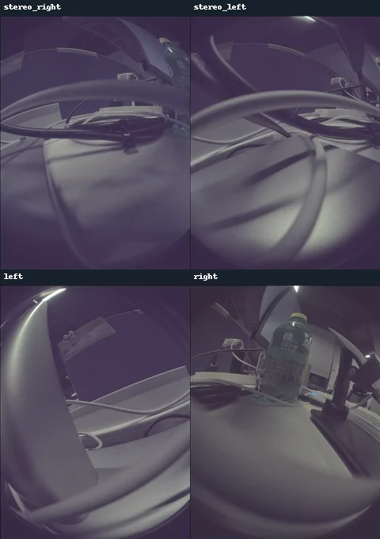
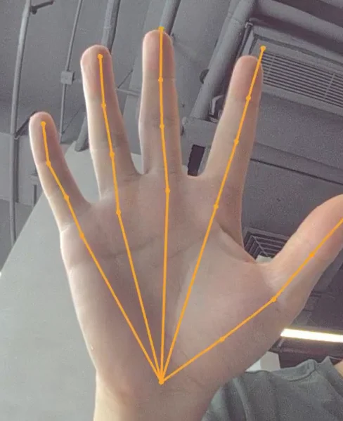

EgoHalo 设备与数据工程
EgoHalo 是一台四路鱼眼的头戴采集设备。我从零搭建并持续负责它的采集控制台，主导了浏览器上传，也参与了 OTA、相机运行时、固件和云端手部处理。
- 做什么
- 头戴采集设备从连接、预览、录制到取回和上传数据的整条链路
- 我做的
- 从零搭建并负责采集控制台（网页 + 原生 Android）；主导浏览器上传；参与 OTA、相机运行时、固件和云端手部处理
- 技术栈
- MCAP · ROS CDR · H.264/H.265 · MJPEG · WebRTC · Android BLE/Wi-Fi · Buildroot
- 实测
- 单台 X5 上 4 轮 × 180 秒 H.264 对照，每轮 13 个话题、16 路视频全量解码通过；直接写包的进程 CPU 均值约降 30%
- 难点与解决
- 设备端直接写 MCAP 时，从任意编码帧开录会让回放器在首个关键帧前解不出画面。我让每路等到参数集和 IDR 齐备，取共同边界后才确认开录。
- 目前进展
- 控制台覆盖 EgoHalo、Insight 7 / Duo 和独立 RDK 双 UVC 三类机型；长时、满卡和多设备同步还没有实机验收。
采集控制台
我从初版 Web 控制台做起，把连接设备、实时查看相机和轨迹、任务录制、取回数据放进同一套操作入口。后来加了原生 Android 端，用蓝牙发现设备、Wi-Fi 连接，网页和 App 共用设备的状态与录制接口。
现场用四宫格看每路相机朝向，也能单独放大某一路确认画面。实时轨迹用来看设备运动和定位状态。


多路起录
EgoHalo 在设备本机直接写 MCAP，不经过 ROS 录制。问题在于四路视频是各自编码的：如果按下录制就开始写包，某一路可能从一个 P 帧开始，回放器在它的第一个关键帧之前什么也解不出来，四路的有效起点也对不齐。
我的处理是开录前先等。H.264/H.265 每一路都要收到完整参数集和 IDR，所有选中的相机都到达可解码起点后，取共同的起录边界，再向用户确认“已开始录制”。写包沿用源时间戳、ROS 消息类型和原有话题，与 ROS 录制的包结构一致。MJPEG 每帧都是独立 JPEG，原样写入即可。
- 就绪判定每路等到参数集和 IDR
- 相机本地写包源时间戳、CDR 和原有话题
- 终止与落盘排空写队列，报告实际结果
结束时也不能只看“停止”按钮有没有响应。写队列要排空、文件关闭、刷盘成功，才算这条 Take 保存完成。录制缓存耗尽时尽量写完已收到的数据，并把这条标为异常，不会在丢帧之后仍显示成功。
单台 X5 的实录对照
- H.264 录制
- 4 × 180 秒
- 每轮保存话题
- 13 个
- 全量解码
- 16 路
对照顺序是 ROS → 直接 → 直接 → ROS。四轮都正常保存，全部消息能反序列化，相机内参和静态 TF 内容一致。直接写包的进程 CPU 均值约降低 30%，但停止保存并没有变快，源时间戳缺口和 VIO 频率波动也仍然存在。另有一次单台 X5 的 MJPEG 实验，检查了原始 JPEG、WebRTC 四宫格与单路，以及实时轨迹。
存储、频率与机型
实际采集频率。Take 详情按话题显示平均记录频率。为了不读整个文件，我先读 MCAP 摘要里的消息计数和各块的时间上下界，再只读可能包含首尾消息的索引。合并各分包的总数和全局首尾时间，按 (N − 1) / (t末 − t首) 算出 Hz。这只是平均值，逐帧缺口交给单独的诊断检查。
存储与恢复。Take 按任务归档。换 TF 卡后可以扫描重建索引；空间不足时尽量把正在录的这条保存完，之后可只读导出。
- EgoHalo
- 四路鱼眼，Buildroot 系统，固定使用本机直接写 MCAP。
- Insight 7 / Duo
- Insight 7 三路，Duo 双路，各自保留配置与校准。
- 独立 RDK 双 UVC
- 按 UVC 设备配置采集。
链路上的其他环节
下面几块是团队共同维护的系统。浏览器上传由我主导，其余几块我参与了一部分。
浏览器上传
用浏览器把已录 Take 从设备传到云存储。我主导了这部分：设备数据导出、分片直传和续传，以及浏览器兼容、账号绑定和多标签页会话隔离。刷新页面后可以复用已经传完的分片。

OTA 服务
设备交付后通过 OTA 网页管理发布。我的改动让一条发布可以关联多个产品 ID，设备仍按自身机型匹配更新。我也参与了运行时升级和恢复流程，升级时保留用户数据和已有录制。
相机运行时
相机运行时负责感知、编码和 ROS 输出。我维护机型识别与校准配置，把预览和录制拆成两条队列：编码数据从硬件缓冲拷出一次，两边共享同一份只读帧。预览积压时只断开预览，录制按自己的缓存预算写入。另外接出与相机源时间同步的 VIO 位姿，带序号和进程代次，控制台据此去重并识别设备端轨迹重启。
设备固件
设备系统由 Buildroot 构建。我参与了 Insight 7 Duo 的产品配置打包、与机型一致的 BLE 名称、低电量状态灯，以及把匹配的采集应用装进发布包。
云端手部处理
服务从设备录制接收任务，分派给 GPU worker。我扩展了 HEVC 输入和多相机处理，按视角输出结果，并维护长录制重试时的结果保留。复核时可以回到某一路相机，看手部关键点是否对得上原画面。


局限与下一步
- 验收范围还窄。直接写包的实机对照都在单台 X5 上完成。长时录制、拔卡、满卡、慢卡、功耗和多设备绝对同步都还待验收。
- H.265 只验证到源就绪。四路本机 H.265 源已能就绪，手机硬解和长时运行还要实机验证。
- 省了 CPU，没省保存时间。直接写包降低了 CPU，但停止保存没有更快，源时间戳缺口也仍在，需要单独定位原因。
- 频率是平均值。Take 详情里的 Hz 只反映平均记录频率，逐帧缺口要看诊断报告。